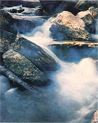

We feel certain that most MOTHER-readers are vitally aware of the threats to drinking-water supplies in the United States . . . after all, no single substance is as crucial to humankind's well-being as is plain old H 2 O. In his latest book, Nor Any Drop to Drink - from which we here bring you Chapter I, "Paupers in the Midst of Plenty" - environmentalist and author William Ashworth has stated the situation with shocking clarity. His analysis throws light on the very core of the problems . . . thereby helping us all to work toward their solutions.
Excerpted from Nor Any Drop to Drink by William Ashworth. Copyright © 1982 by William Ashworth. Reprinted by permission of Summit Books.
Life on earth is bound inextricably to the presence of water. It is the one unvarying necessity for all living things. There are life forms - the anaerobic bacteria - which can do very well without oxygen, and in fact are destroyed by exposure to it. There are creatures deep in caverns which can live without light; there are plants that can survive indefinitely without any food but sunlight and air. There is nothing that can live without water. Water is the basic material of protoplasm, the life stuff of the living cell. Stained red with iron and other necessary impurities, it becomes blood, to transport the body's nutrients and wash away its wastes. Sticky with sugar in the stem of plants, it becomes sap. We drink it; we grow our crops with it; we use it for a multitude of industrial purposes, for transport and for cooling, as a solvent and as a raw material, for food, for furniture, for books, for automobiles, for jewelry, for gasoline, and for everything else under the sun. "Noblest of the elements," sang the poet Pindar some twenty-five centuries ago, and for all the generations from that time down to this that truth has been constantly reaffirmed.
We Americans are the inheritors of a continent once richly endowed with this most precious of all natural resources. Early settlers found this land an Eden, laced with great rivers, bubbling with springs, bathed by sweet rains, and cupping some of the world's most magnificent freshwater lakes. William Bradford of the Plymouth Colony wrote of enjoying "the best water that ever we drank" out of the stream the Pilgrims had named, with marvelous creativity, Town Brook; settlers on the Connecticut were so enamored of its waters that they first named it the Fresh River, and the Dutch on Manhattan wrote home ecstatically of brooks "pleasant and proper for man and beast to drink, as well as agreeable to behold, affording cool and pleasant resting places." The Mohawk was "as clear as crystal and as fresh as milk." Farther west there was the Sangamon, with its "pure and transparent waters," and the Mississippi, "Father of Waters," and the Ohio, that "clear majestic tide" which the French knew as La Belle Riviere and whose "limpid waters" inspired the early traveler and historian Charles Fenno Hoffman to write effusively that the stream and its lush valley made "a moral picture whose colours are laid in the heart, never to be effaced."
Such was the wealth the colonists found - and proceeded to squander like spendthrift schoolboys. Today the Eden has vanished; the "limpid waters" and the "cool and pleasant resting places" are virtually gone. Large cities, farming regions, and even whole states report water shortages. Throughout the length and breadth of the continent, wells are running dry, pollutants are pouring into streams and seeping into aquifers, and once-sweet waters are turning saltier than the sea. Great cities, their own waters long since overcommitted or fouled beyond human use, reach hollow tentacles hundreds of miles into the surrounding countryside, sucking up whole rivers and diverting them across mountains and deserts and sprawling farmlands to the taps and toilets of their citizens. Farmers too move water about on a massive scale, bleeding rivers into tens of thousands of miles of irrigation ditches which finger out across the nation's croplands like the circulatory system of a gargantuan and bloated starfish. Increasingly, these water-transfer systems interlock, the intake pipes of one region creeping like furtive fingers into the water supply of another. New York City, Trenton, and Philadelphia jockey over the Delaware River; the state of Nebraska sues upstream interests in Wyoming for diverting too much water from the North Platte; west Texas casts covetous eyes on Louisiana's section of the Mississippi; and Denver, Phoenix, and Los Angeles, separated from each other by distances approaching a thousand miles, battle with escalating rancor over the limited resources of a single stream, the increasingly saline Colorado.
Even with these massive transfusion systems in place, there is seldom enough. New York City water - imports and all - is being used at a rate sixteen percent higher than engineers say the water system can safely supply, a water shortfall of some 200 million gallons per day. For Tucson, the figures are sixty-two percent and 37 million gallons. New Jersey's water demand outstrips its supply by 90 million gallons a day; California's daily deficit is 2.6 billion gallons. Long Island's three million residents draw their water from an underground reservoir that has become, in the words of one report, a "severely contaminated industrial sewer"; the water in the island's wells has turned into a witch's caldron of toxic chemicals, and many of them have had to be closed. On the Great Plains, the nation's breadbasket, groundwater supplies are expected to be exhausted in many areas by the year 2000, leaving farmers without enough water to grow crops.
Civil engineers and other professionals who work with water supply have a useful concept known as "safe yield," which may be described in simple terms as the amount of water a given supply system can dependably produce year after year, no matter what the weather does. A water system is said to be operating "within safe yield" if the demands for water deliveries from the system are less than the amount it will always be able to deliver even in the driest of years. This is, of course, the situation that all water systems would prefer to be in. Fewer and fewer are. All across the country, demand is growing while supply is shrinking, and in an alarming number of places the rising demand curve has crossed the falling supply curve and now runs above it. We are, in fact, perilously close to overtaxing our water supplies on a nationwide basis - to exceeding safe yield for the continent itself.
We thought the resource was limitless, but we were wrong. There are limits, and those limits have arrived. Our land still seems a land of plenty, but we have become paupers in the midst of it.
To understand how it is that here on our water planet we can come so close to running out of water, we must first understand a few things about the resource itself, and about the many ways in which we use it and - all too often - abuse it.
The earth contains enormous amounts of water. More than seventy percent of the planet's surface is covered with it, to depths that approach seven miles. There are 315 million cubic miles of it in the ocean basins, and 7 million cubic miles locked in the polar ice caps, and 53,000 cubic miles spangled out over the surface of the continents in the form of lakes, and ponds, and rivers, and sparkling mountain brooks. Nineteen million cubic miles interlace the solid ground beneath our feet; nearly 4,000 cubic miles float through the air over our heads. All in all, we have a planetary resource - conservatively estimated - of some 344 million cubic miles of water: about 379 quintillion gallons, enough to form a sphere nearly half the diameter of the moon. Enough to provide more than 88 trillion gallons for each man, woman, and child on the face of the earth.
Not all of this vast resource is available for our use, of course. More than ninety percent of it is ocean water, too salty for drinking or growing crops or even for most industrial purposes. Another six percent lies so deep in the earth - two miles and more - that no practical well can reach it. Thirty-four hundred cubic miles are locked up in the bodies of living things or tied into the soil in the form of "bound water," giving the soil its characteristic texture but unavailable for use by plants or for extraction by wells. More than seven million cubic miles are ice. When all these things are subtracted, barely 0.05 percent of the world's total water budget remains available for human use.
But even that tiny percentage works out to be an enormous amount. Our planetary freshwater resource - excluding the polar ice caps and the mountain glaciers - is some 162,000 cubic miles, enough to provide every person on earth with 42 million gallons. And this resource is constantly renewing itself. More than four trillion gallons of rain fall each day on the continental United States alone, approximately eighteen thousand gallons apiece for each of our 230 million citizens. By contrast, our daily bodily requirement - the amount of water we need to consume each day to stay alive - is only a little under two quarts apiece, or about thirteen thousand gallons in an average lifetime. We receive as a daily gift, free from the skies, nearly half again as much water as all of us will ever drink in our entire tenancy on this planet.
Given figures on this order of magnitude, it may be difficult to see where the crisis lies. If our drinking water is being replaced at a rate 36,000 times faster than we can drink it, why do we worry about running out? Where is the shortage? Is there a shortage at all?
When questioned directly in this manner, most water-supply experts would have to answer no. We have, and always will have, all the water we will ever need to live on. Nevertheless - and at the same time - we are experiencing severe water-resource problems, including problems of supply, in virtually every section of the country. We have no shortage, but we are running out of water just the same.
There are several reasons for this apparent paradox. To begin with, we use water for many things besides drinking; those two quarts we consume each day are only a tiny fraction of the amount we actually require. We use water to wash our hands, and wash our dishes, and flush our toilets, and cook our morning oatmeal and our evening vegetables. A five-minute shower with a conventional shower head takes twelve gallons; five minutes of watering the lawn or the garden consumes fifty gallons. All in all, the average American puts to direct use, running through the faucets of his home, not just two quarts but closer to ninety gallons of water every day. And that is barely the beginning. The same group of unusual characteristics - high specific heat, extreme fluidity, and unparalleled dissolving power - that make water indispensable to life also make it invaluable for industry, and as a consequence it is the most heavily used of our natural economic resources; there is not a single manufactured item in your house which did not require water for its production. The steel in your washing machine took roughly 4,500 gallons to produce; the rayon in your living-room carpet, about 50,000 gallons. The car in your driveway represents a water investment of about 100,000 gallons, plus another 200 or so every time you fill the gas tank. Mining the few grams of gold in your wedding ring may have taken as much as 2,500 gallons. A sugar-processing plant uses roughly four million gallons per day; a plastics plant, 180,000; a large brewery, as much as fifteen million. A coal-fired power plant uses about 900 gallons of water for every kilowatt-hour of electricity produced - not counting the water used to mine and process the coal and transport it to the plant in the first place. All in all, manufacturing and energy production in this country use a total of 140 billion gallons of water every day, or about 600 gallons per person.
Added to our 90-gallon individual allotments, that makes 690 gallons.
Then there is food production, and that - thanks largely to irrigated agriculture - takes even more. A bushel of wheat represents a water investment of 15,000 gallons; a thousand-pound steer, some 3.5 million. A single egg on your breakfast table took the equivalent of nearly 2,000 glasses of water to get there. All told, the water required to put an average day's food on the table for a family of four works out to about 3,200 gallons, or enough to fill a small swimming pool. The weight of the food consumed is about twenty-four pounds; the weight of the water behind it, just under thirteen tons.
When agricultural, industrial, energy, and domestic needs are added together, our per-capita water use as a nation turns out to be not the survival level of two quarts, but approximately 1,500 gallons per day. We use not one thirty-six-thousandth part of our daily gift from the skies, but closer to one tenth.
Adding to the difficulties posed by the fact that our use of the resource is so enormous are the difficulties posed by another and more ominous fact: the resource itself is shrinking.
To be sure, this is not a literal shrinkage. Water is among the most difficult of substances to destroy, and the small amounts we do manage to break up - for instance, in the production of hydrogen by means of electrolysis - are more than offset by the amounts we create by burning hydrocarbon fuels such as gasoline and natural gas. (There are also, many geologists believe, small amounts of water - called "juvenile water" - constantly being created deep in the earth and finding their way to the surface through cracks in the deep ocean floor.) Nevertheless, the amount we have available for most uses is constantly and alarmingly decreasing. The reason is pollution. We are not destroying our water; but we are rendering it unusable, and that amounts to the same thing.
The scope of this problem is immense, and we are nearly all affected by it. Its ubiquitousness is probably best shown by a 1978 government report, The Nation's Water Resources 1975-2000, which listed only eight states as having no serious occurrences of ground water pollution, and only two - Montana and Kansas - as having no serious occurrences of surface water pollution. Little water escapes this invasion. In some places even the rain is polluted-and since the rain is the ultimate source of all fresh water on earth, this pollution has extremely serious consequences, even though it is (so far) very minor.
Finally - and perhaps most important of all - there is the question of distribution. Despite the pollution, despite the huge amounts we use, there is really no serious threat that we will run out of water in this country. We have enough, and we will continue to have enough for the foreseeable future. The problem is not that it is inadequate. The problem is that it is not in the right places.
About 1.6 quadrillion gallons of rain fall on the United States each year - enough so that, if it were evenly distributed, it would cover the entire country to a depth of more than two and a half feet. But it is far from evenly distributed. More than forty percent of the nation's rain falls east of the Mississippi, on just twenty-four percent of the land. Little South Carolina (31,000 square miles) receives more than 26 trillion gallons of rain a year; giant Nevada (110,000 square miles) receives barely half of that. Annual rainfall at Baltimore, Maryland, is more than five feet; at Yuma, Arizona, it is less than three inches. The upshot of these discrepancies is that some places get ample rainfall; some places get adequate rainfall; and some places do not get nearly enough. Generally speaking, the ample lands are in the East; the adequate lands, in the Midwest. The arid lands are in the West.
The eastern border of the arid lands can be defined with some precision. John Wesley Powell, the one-armed Civil War veteran, water activist, and Grand Canyon explorer, pointed that border out more than a hundred years ago: it is that line to the east of which the land receives more than twenty inches of rain per year. With more than twenty, you can grow crops unirrigated; with less than twenty, you cannot. Because this twenty-inch rainfall contour, or isohyet, is located on the Great Plains, far from the influence of mountain ranges or ocean air masses, it is almost perfectly north-south; and because of a lucky accident of the early mapmakers' art, it is easy to spot. As Powell wrote in his Report on the Arid Lands of the United States, the first document to realistically assess the problems and potentials of the American West:
"The eastern boundary of the Arid Region . . . is doubtless more or less meandering in its course throughout its whole extent from south to north, being affected by local conditions of rainfall . . . but in a general way it may be represented by the one hundredth meridian, in some places passing to the east, in others to the west, but in the main to the east."
Get out a map of the United States and locate the hundredth meridian on it, tracing it from Canada to Mexico on its thousand-mile journey down the Great Plains. Beginning near the small town of Carpenter, on the Canadian border, it sweeps down through North Dakota and South Dakota, bisects Nebraska, plunges on into Kansas. Dodge City sits directly on it. It slices the panhandle neatly off Oklahoma, runs the border between Oklahoma and Texas for 130 miles, and slices southward into the Texas heartland, nicking Sagerton, separating Sweetwater from Abilene, and running down the valley of the upper Nueces River. Two dozen miles above Laredo, it fords the Rio Grande and disappears into Mexico. East of this line, generally speaking, there is enough water for most purposes; west of it, there is not.
Perhaps this would not be a problem, but for two reasons. The first is that this nation grew up on the Eastern Seaboard and formed its water-use practices there, where there is always plenty of rainfall. And the second is that the historic tendency in this country has always been to move westward. Landing from the Atlantic, the early European settlers moved up the coastal valleys toward the setting sun, pooled briefly behind the Alleghenies and then breeched them, flooded the Midwest, fingered out across the Great American Desert like the edge of a rising tide. By the middle of the nineteenth century, the wave of advancement had reached the Pacific. Here, because there was no place further to go, it stopped. The energy behind it, however, remained; people from the East continued to move westward, filling in the gaps in California and Oregon and Washington, spilling over backward into Idaho and Arizona and the Rocky Mountain states. This movement is still going on today. Between the 1970 and 1980 censuses, for example, the population of New York State declined by about 1.6 percent; at the same time, the population of Oregon climbed by nearly seventeen percent. The population of North Carolina grew modestly, from 5.1 to 5.6 million, or approximately ten percent; the population of Arizona exploded from less than 1.8 million to more than 2.4 million, a growth of better than thirty-six percent. Overall, those states west of the hundredth meridian grew at a rate two and one half times faster than their Eastern cousins. And since the West is so much drier than the East, this means that the actual per-capita amount of rain which fell in the vicinity of each U.S. citizen decreased over this period at a rate far faster than the population increase alone would indicate. We have water, but we are rapidly and methodically moving ourselves away from it. And in the process, we are creating severe and sometimes unsolvable problems. Our Sun Belt cities grow; but it is rain, not sun, that we must have in order to provide water.
As the population has shifted westward, so has the agriculture that supports it. As late as 1920, a full fifty percent of all U.S. crops were grown east of the tier of states - North Dakota to Texas - that contains the hundredth meridian. Today, that amount has shrunk to less than thirty-four percent. But because crops cannot grow on the West's tiny rainfall, this westward shift in agriculture has led to a veritable explosion in irrigation. Between 1940 and 1980, irrigated acreage in the West more than doubled, with some areas - western Kansas, for example - showing increases of as much as three thousand percent.
All this, of course, has put a tremendous overburden on the West's scanty water resources. But not all water distribution problems are found in the West; even the rain-rich East is showing signs of the kinds of stress caused by not having enough water in the right places. The reason, here, is not too little water for a given locality, but too many people.
Despite the westward movement, most of our population still lives in the East, clumped into cities that have simply outgrown their ability to efficiently supply water at the rates their citizens demand it. New York City's use figure, for example, is 190 gallons per person per day; with a population of 7.4 million and a rainfall of forty-two inches a year, this means that even if the city could collect and utilize every drop that fell - instead of the one drop in three that is closer to reality - it would still need a catchment basin ten miles wide and nearly one hundred miles long merely to keep up with daily demand. Other cities in the East and the South - Boston, Philadelphia, Washington, Atlanta - are experiencing similar difficulties. The problems caused by the concentration of water demand can lead to other problems, many of them severe. New York's financial crisis has been caused at least partially by the capital demands made on the city's government by the need to maintain and expand the water system. Groundwater withdrawal from beneath Orlando, Florida, has opened great caverns in the earth, and Orlando has begun collapsing in upon itself; Houston, with the same problem but different underlying geology, is slowly sinking into the sea.
Limits are limits, and even when those limits seem very high indeed, it is still possible to bump up against them. And when those limits are imposed, not by humans, but by nature - in this case, by the finite size of this round wet ball we call the earth - there is no way that bumping up against them is not going to hurt.
Perhaps the real problem is one of attitudes. Children of a culture born in a water-rich environment, we have never really learned how important water is to us. We understand it, but we do not respect it; we have learned to manipulate it, but we have never really learned to handle it. Where it has been cheap and plentiful, we have ignored it where it has been rare and precious, we have spent it with shameful and unbecoming haste. We have shunted it from place to place across the landscape with reckless abandon; we have pried open great natural storehouses of it, and spent millions of years' accumulation in a few short decades. Everywhere, we have poured filth into it. We have done these things purposefully; we have not done them maliciously, but we have done them. And in the long run, that is all that really counts.
EDITOR'S NOTE: If you've enjoyed and profited from what you've read here, then you'll no doubt want to buy Nor Any Drop to Drink (for $6.95 from bookstores) so you can read the other 19 chapters. What's more, purchasing one copy will entitle you to have a second copy sent to the public official of your choice . . . at the publisher's expense.
|
 |
|
|